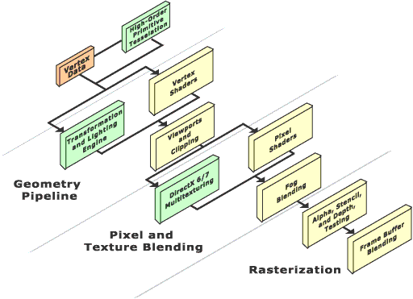

Microsoft® DirectX® 8.0 features a new kind of graphics pipeline, featuring a high degree of programmability. The following diagram illustrates the major components and data flow in the programmable vertex and pixel pipeline. The transformation and lighting engine and DirectX 6.0 and 7.0 multitexturing modules have been replaced in the programmable pipeline by vertex and pixel shaders.

The first new part of the pipeline is the high-order primitive module, which works to tessellate high-order primitives such as bzier and B-splines. The vertex shader is a programmable module used to execute geometric operations on the vertex data. The vertex shader can perform a variety of functions which includes standard transformation and lighting. The pixel shader module is a programmable pixel processor. Pixel shaders control the color and alpha blending operations and the texture addressing operations.
For general information on programmable shaders, see Introduction to Procedural Shaders.
For information on how the Microsoft® Direct3D® pipeline for DirectX 8.0 compares to previous versions, see Integration of Vertex Shaders into the Geometry Pipeline.
For information on the nonprogrammable sections of the pipeline, which have remained unchanged from DirectX 6.0 and 7.0, see Viewports and Clipping and Rasterization.